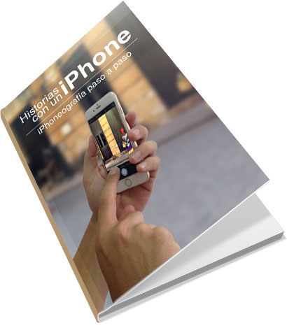

La fotografía con smartphones lleva desde hace unos años cautivando cada vez más seguidores, y es que la velocidad con que se hace las fotos, se editan y se publican en Internet con estos dispositivos, le ha quitado terreno a las cámaras clásicas.
Todo este proceso fotográfico es bien sencillo, cualquiera puede hacer fotos… pero si quieres que tu trabajo destaque sobre los demás, lo simple puede tornarse “complejo”.
iPhoneografía paso a paso, una guía en la que conocerás más a fondo la aplicación Cámara que trae instalado el iPhone, con trucos que quizás no conocías y técnicas con las que tus fotos serán más atractivas que antes. Fundamentos básicos de la fotografía, uso de diferentes aplicaciones cámaras con nuevas características, así como el uso de editores de fotos dentro del mismo iPhone, la utilización de accesorios y otros contenidos son abarcados en este libro.
Aunque como dispositivo principal se use un iPhone, también para los usuarios de Android, las técnicas y conceptos explicados aquí pueden ser usados por ustedes, así como muchas de las aplicaciones que se mencionan existen para ese sistema operativo.
Este libro es para aquel que le gusta la fotografía en sí, en especial para aquello que han convertido su iPhone en su principal herramienta fotográfica, tanto para tomar las fotos como para editarlas.
Si te interesa este libro puedes adquirirlo en Leanpub por $9.99 USD.